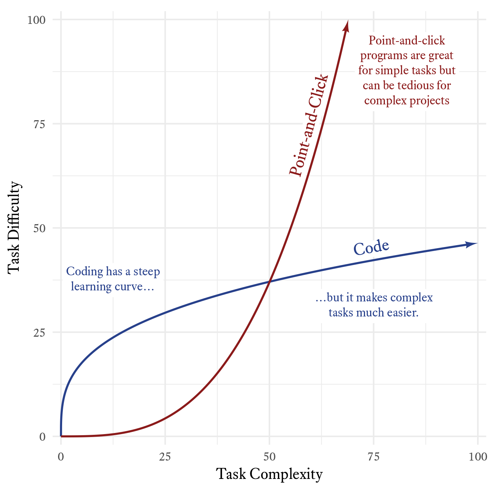

| Sorted Traditional Dates | Sorted ISO Dates |
|---|---|
| August 03, 2010_District_B.csv | 2010-08-03_District_B.csv |
| January 04, 2012_District_Q.csv | 2012-01-04_District_Q.csv |
| July 13, 2014_District_H.csv | 2012-03-06_District_W.csv |
| March 06, 2012_District_W.csv | 2013-11-24_District_L.csv |
| November 10, 2014_District_V.csv | 2013-11-30_District_A.csv |
| November 24, 2013_District_L.csv | 2014-07-13_District_H.csv |
| November 30, 2013_District_A.csv | 2014-10-06_District_N.csv |
| October 06, 2014_District_N.csv | 2014-11-10_District_V.csv |
2 Getting Ready to Use R via RStudio
This book can be read and understood without using R at all. However, many of the calculations discussed would be quite difficult without the statistical functions of a language like R.
2.1 Get Ready for a Challenge

For R to pay off, you have to buy in. Learning challenging material does not have to be “fun” at every moment to be worthwhile. The beginning data analyst, assailed by statistical concepts, coding conventions, and baffling error messages, feels it all as one great blooming, buzzing confusion.
The challenge of learning R is indeed going to be challenging at times, but just there will also be many little a-ha moments, several larger check-out-what-I-can-do celebrations, and a few peak experiences of eudaemonic reverie.
2.2 What is R?
R is the eighteenth letter of the alphabet, of course, but for data analysts, it has several specialized meanings.
2.2.1 R is a programming language built for statistics.
In 1976, John Chambers and colleagues at Bell Labs developed S, a programming language specifically designed to facilitate statistical analyses and data visualization.
In 1995, Robert Gentleman and Ross Ihaka released an open-source variant of S and named it “R” after their shared first initial.
Most S code looks identical to R code, but R has a number of subtle enhancements such as better memory management.
2.2.2 R is a computer program that runs code in the programming language R.
The primary way that the R language is used is to perform analyses in the R software environment for statistical computing and graphics. This program is free and open source, meaning that not only can anyone download it for free, but its source code can be reused by anyone for any purpose.
2.2.3 R is a data science ecosystem in which the R community flourishes
Strictly speaking, R is just one program. However, people use R in startlingly creative ways, often in combination with other programs and in coordination with other people. I like to think of R as the entire ecosystem of software, services, standards, and cultural practices shared by the entire community of R users.
The technical merits of the R language and software do matter, but the success of R has more to do with the inclusive, welcoming, diverse, and expanding culture of the R community. When an individual R user has a great idea, the R community has as integrated set of technical standards, web services, and cultural practices such that innovations spread quickly to everyone in the community—often with multiple tutorials aimed at users of all levels of expertise. With the support of the R community, ordinary people can leverage R to accomplish far more than anyone would have thought possible not so very long ago.
2.3 What can you do with R?
What can’t be done with R is an ever-contracting list. If you let it, R will help you in ways you did not know you needed it. You can (and should) use R for tasks that extend well beyond analyzing data. Because R plays well with many other programs, you can leverage its capacities to do all sorts of things:
- Manage data
- Analyze data
- Visualize data
- Control and run other programs
- Write and publish books, papers, and posters
- Create presentations, tutorials, websites, web apps, and digital aRt
For example, this Tutorial was “created in R.” That is, I wrote the text in a simple format and then let R (and RStudio) handle all the complex and tedious coordination of many other programs to make this webpage. It does most of its work under the hood without my awareness.
2.4 What is RStudio?
In this class, we will probably never actually open the R program directly. Why not? R’s text editor works well for what it does, but it has limited functionality compared to other ways of interacting with R. Instead, we will run R code in an integrated development environment (IDE) called RStudio. An IDE is a program that makes programming easier. RStudio has many features that automates tasks what would otherwise be confusing, difficult, or tedious.
2.5 Code > Clicks

Though R will be frustrating at times, stick with it—the dividends on your invested efforts are huge. Nothing beats the flexibility, freedom, and power of using code. Not only can I do things much faster than I could with point-and-click programs, I can do things I never would have considered doing. If there are no functions that do exactly what you want, you can adapt or make one that fits your needs perfectly. If you need to to re-run your analysis with a point-and-click menu interface, you need a perfect memory of what you did before. With code, every step is perfectly preserved.
2.6 A point-and-click alternative to RStudio

That said, if you need to complete a simple data-analysis task quickly, and you have no time to learn R, I recommend using jamovi. Jamovi has a beautiful point-and-click interface that you can learn to use in just a few minutes. Jamovi uses R under the hood, and like R, it is free.
The ease of use of a point-and-click interface has a trade-off. If you never learn to code, you will be stuck with a limited set of skills and many tasks will be prohibitively complicated or dauntingly tedious. In Figure 2.5 I recreate a plot made by many others before me.

2.7 Installing R
Installation depends on your operating system. If you have already installed R, make sure you have the latest version.
2.7.1 Windows
Click here and download the latest version of R for Windows. Open the file and follow installation instructions.

2.7.2 Mac
Click here and download the latest version of R for Mac. Double-click the file and follow installation instructions.
The instructions can be overwhelming to newcomers so I have included a picture with the download link highlighted:

2.7.3 Linux
Install R on Ubuntu with this Bash script:
If you are a Linux user, you probably know what this means. If not, you probably do not. More detailed instructions here.
2.8 Installing RStudio
2.8.1 RStudio Desktop
RStudio is free. Please do not pay for anything. The paid versions of RStudio have nothing you will need for this course. They are not better than the free version. They simply have features tailored to businesses and developers.
Install the free version of RStudio Desktop here.
The version recommended for your operation system (I’m using Windows) will appear here:

2.8.2 RStudio Cloud
One alternative to installing R and RStudio on your machine is to use RStudio in a web browser in RStudio Cloud. After signing up for a free account, you can use RStudio online. As the internet speeds up, I imagine that this option will become increasingly attractive.
2.9 Recommended RStudio Customization
To customize RStudio, click the Tools menu, then Global Options.

I strongly recommend changing the default data saving behavior to never restoring old sessions and never saving data in memory. Old variables lurking unnoticed in memory cause mystifying errors and baffling behavior. Starting each session fresh will prevent hours and hours of frustrating debugging.

If you use a dark theme, you might have less eye strain. Up to you, though.
I change my code theme from time to time but for some reason I always return to the Tomorrow Night 80s theme.
For teaching, I use Consolas. For myself, I use Fira Code. It uses font ligatures to combine symbols in a pleasing manner.

A complete list of options explained here.
2.10 Using RStudio
Open RStudio the same way you would any other program in your operating system.
2.11 A Quick Tour of RStudio’s 4 Panes
RStudio may appear overwhelming at first. That feeling will fade quickly with use. By default, RStudio has 4 panes where you can interact with R in different ways.

2.11.1 The Console
The console (lower left) is where you submit quick temporary calculations and run code you have no intention of saving. Hit Enter to submit code to R. R is interactive in the sense that it will display the result of the code in the console where you typed.
2.11.2 Scripts
The script pane (upper left) is for writing code you want to preserve in a script file (.R) or RMarkdown file (.Rmd). More on RMarkdown later. Save your script files frequently.
You can submit code to the console by hitting Ctrl+Enter (or ⌘+Enter on Macs). You can also submit code by hitting the Run button. If you have code selected, only the selected part will be submitted. If you have no code selected, the current line (wherever the cursor is) will be submitted.
2.11.3 Environment Variables
In the Environment tab in the upper right pane, you can see which variables have been created and a preview of what they contain.
2.11.4 Viewer
The lower right pane has several tabs:
- Files: Interact with project files
- Plots: Preview plots
- Packages: Install and update packages
- Help: Search for help
- Viewer: View documents created by RStudio
2.12 Installing and Updating Packages
What comes installed with R is called “Base R,” which by itself is quite powerful. However, what makes R especially great is the fact that tens of thousands of free “packages” are available in a central repository called CRAN. These packages extend what R can do far beyond what any one person could have imagined.
In the bottom right pane, click the Packages tab.
/

Any new package you need but do not have, you can click the Install button and type the name of a new package. For example, click Install button, type tidyverse in the Packages textbox, and click Install.
You might have to wait a while, but now many new packages have been installed on your machine.
You do not need to install packages again. However, I update all my packages each time I use RStudio to make sure I have the best and most up-to-date versions of the packages available.
2.13 Create a New Project
When you take on a new data-analysis task, you will want to keep your files organized in a particular folder. You want to make sure that this folder is the first place that R will look when you specify a file name. Otherwise we will have to write out the entire file name, which will be likely different if we need to run the same analysis on a different computer.
RStudio’s “projects” are useful for making sure that all your analyses are in the same folder and that your analyses will work no matter which machine runs it.
Without projects, we would need to write out the entire file name like so:
Technically, there are other ways around this problem, but they are not recommended.
With projects, we can import data with just the bare file name, like so:
Much better!
Okay, let’s get to it.
Steps to create a project
In your operating system, create a folder for this course on your computer (e.g., “EDUC8825” or “Longitudinal Data Analysis”).
Open RStudio.
-
Create a new project in the folder for this class.
- Click File->New Project
- Select Existing Directory
- Click Browse
- Navigate to the new folder.
- Click Open
- Click Create Project
2.14 Be Kind to Future-You
Hadley Wickham reminds us that the most important person to write code for is future-you.
At all times, work with the assumption that 10 minutes from now, you will suffer catastrophic datamnesia—memory failure for everything related to your analysis.

Present-you thinks future-you has god-like memory capacity. Future-you has very human and very fallible memory. Predicting is hard, especially about the future and what future-you will remember.
Future-you spends an inordinate amount of time recreating what present-you thought future-you would understand and remember—so much time that future-you neglects to take care of future–future-you. Future-you won’t take care of anything unless present-you learns to take care of future-you.
2.15 Folder Organization
- Bad: All files on your desktop
- Also Bad: All files in the default folder (e.g., My Documents)
- Worse: Important files scattered in various folders with no organization.
- Even worse: Important files are in your Downloads folder where they are likely to be overwritten or deleted.
- Good: Use a file synchronization service like Dropbox, Box, OneDrive, GoogleDrive, etc.
- Also Good: Within your file synchronization service, have a well-organized hierarchical structure to your folders.
- Even Better: Use version control software like Git, and save the code in an online repository like GitHub.
2.16 File Name Guidance
Giving convenient, easily understood names to files, whether data files, image files, or script files can have far-reaching consequences for both present-you and future-you.
Detailed advice on naming things from Jenny Bryan found here. My shortened presentation draws from her ideas.
2.16.1 Give your files long, descriptive names.
Make it clear to future-you exactly what is in the file.
-
Bad:
data.xlsx -
Better:
dissertation_data.csv -
Even Better:
student_questionnaire_time_1.csv
2.16.2 Separate words with underscores, not spaces.
Replace spaces with underscores (_). Spaces often work fine, but sometimes they do not, which can result in hours and hours of debugging. Play it safe and don’t use spaces in file names.
student scores.xlsx → student_scores.xlsx
2.16.3 No special characters in file names:
Avoid including in file names characters that have special meanings in many programming languages such as *@^$! and many others. Otherwise unexpected results can make your life complicated.
parent@emotion*survey.csv → parent_emotion_survey.csv
2.16.4 Separate dates with hyphens using ISO format

ISO format for dates is YYYY-MM-DD, meaning that a four-digit year comes first, followed by a two-digit month, followed by a two-digit day. This format makes sorting order much easier than the formats used in the U.S.
Here is a data file name that begins with a date, followed by the school district from from the data were collected:
2020-01-12_district_A.csv
One of the benefits of using dates in the ISO format is that they sort chronologically. Which file names would you prefer to deal with?